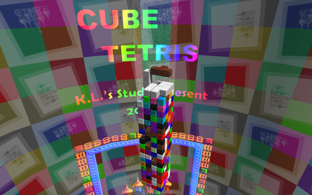

<html>
	<head>
		<title>Cube Tetris (ScreenSaver) - K.L.'s Tanx Demo</title>
		<link rel="bookmark" href="res/Tetris.ico" type="image/x-icon" />
		<link rel="icon" href="res/Tetris.ico" type="image/x-icon" />
		<link rel="shortcut icon" href="res/Tetris.ico" type="image/x-icon" />
	</head>
	<body>
		<script type="text/javascript" src="../Tanxjs/util.js"></script>
		<div style="width: 100%; height: 96%;">
			<script type="text/javascript">
				if(tanxjs.util.requiredVersionAvailable("0.2.0.4"))
				{
					document.write(
						'<embed type="application/x-klstudio.tanx" style="width: 100%; height: 100%;" src="res/Tetris.tanxzip" game="TetrisScreenSaver.game">'
					);
				}
				else
				{
					var subMessage = tanxjs.util.getPluginVersion() ? "This page requires a newer version of the K.L.'s Tanx plugin." : "This page requires the K.L.'s Tanx plugin to be installed.";
					document.write(
						'<div style="background: lightblue; width: 100%; height: 100%; text-align:center;">' +
						'	' +
						'	<br/><br/>' + subMessage + '<br/>' +
						'	<a href="../tanx.html">Click here to download.</a>' +
						'</div>'
					);
				}
			</script>
		</div>
    </body>
</html>
